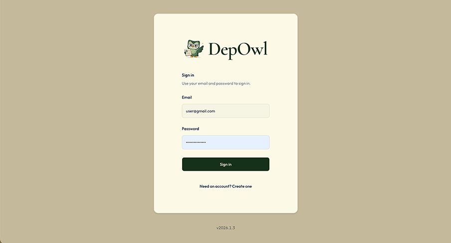

DepOwl

DepOwl is a deposition transcript verification service built for the precision and structure of the legal record. I designed and built the reporter-facing experience that takes a transcript from upload through verification to a clear, review-ready errata report.
| Product | DepOwl Legal (web app) |
|---|---|
| My role | Product design and development |
| Primary users | Court reporters and the professionals who support transcript review |
| Focus | Submission, progress visibility, delivery selection, and report handoff |

Product context
A deposition transcript is a structured legal record, not ordinary prose. DepOwl reviews the document across specialized verification layers, including language, transcript structure, legal context, and consistency across the record. Findings are grounded in the transcript and organized with page and line references, original wording, and a proposed correction or review flag. The reporter remains in control of the final decision.
The web experience connects that verification work to the reporter’s everyday workflow: submit a transcript, choose the required turnaround, follow progress, and receive the errata report.
Designing the service experience
The central design task was to make a multi-step service understandable from the reporter’s point of view. A single job record brings together the transcript, page count, delivery tier, status, dates, payment, and final file. Each detail appears when it becomes relevant, so the reporter can move forward with clear information at each step.
Sign Up
 The sign-up process is designed to be quick and straightforward, guiding the reporter through role selection, credential setup, and optional organization details before accepting the Terms of Service.
The sign-up process is designed to be quick and straightforward, guiding the reporter through role selection, credential setup, and optional organization details before accepting the Terms of Service.
Sign-up is organized into three steps: identify your role, set sign-in credentials, then add an optional organization and accept the Terms of Service. Role choices include court reporter, scopist or proofreader, law firm staff, agency, stenography school, and other, reflecting the range of professionals involved in transcript work.
The flow
The reporter’s journey follows five connected steps, from job creation to errata delivery.
1. Welcome
A new account opens to its Jobs list, with a welcome message that points to creating the first job and to Help.

2. Create a job
Create a Job keeps submission focused on the two required inputs: a transcript name and a PDF (up to 25 MB). Status and ready dates are managed by the workflow, not entered by the reporter. After submission, an on-screen confirmation returns the reporter to Jobs, and an email confirms they will be notified when the errata sheet is ready.

3. Proof this job
The Jobs list gives each account a focused view of its own transcripts. Status appears as an icon with a text label (Uploaded, Processing, or Ready for Download), keeping the state legible beyond color. Page count moves from “Counting…” to a number, or shows an error with a retry option. The list updates while counting is in progress.


4. Commit to proofing
Once the page count is available, and payment is not already authorized or paid, the reporter can choose a delivery tier. The “Choose delivery tier” dialog presents turnaround, rate, page cap, and an estimate for the transcript. If checkout is left unfinished, the job offers “Resume payment,” keeping the next action with the original job.
5. Wait, then receive
The row follows the job through Uploaded and Processing, with due, estimated-ready, and ready dates shown as they become available. When the errata report is ready, the reporter can download it from the job and receives an email with the PDF attached.
One job, a complete status picture
Each row brings the transcript and its service details together, so the reporter can scan progress and find the next available action.
| Column | What the reporter reads |
|---|---|
| Status | Uploaded, Processing, or Ready for Download |
| Transcript name | The name entered on Create a Job |
| Pages | Counting…, a number, or Error with Retry count |
| Tier | Standard, expedite, or daily once chosen; otherwise — |
| Est. price | Based on page count and tier. “Over cap” if the transcript exceeds the tier’s cap. — until both exist. |
| Payment | Proof this job, Resume payment, Counting…, or a payment state (Authorized, Paid, Pending, Failed, Refunded, Unpaid) |
| Transcript size | Size of the uploaded PDF |
| Created, Due, Ready Est., Ready | Dates. Empty cells stay — until a date is set. |
| Download Errata | The download action when the job is ready and a file is present; otherwise — |
Key design decisions
Keep submission focused
The create form asks for the transcript and its name. The system supplies status, dates, and page count as the job progresses. This keeps the handoff direct and gives the reporter one reliable place to follow the work.
Make the estimate actionable
The server counts the pages before the reporter chooses a tier. While the count is running, the row communicates progress; if it fails, the reporter can retry. The estimate then reflects the page count and selected rate, giving the reporter concrete information before checkout.
Make delivery and payment terms clear
The dialog explains the payment timing before checkout: Stripe places an authorization hold, and the card is charged when the errata sheet is delivered. It also explains the 25-page minimum. On return from Stripe, a confirmation toast reiterates the hold and charge timing.
| Tier | Turnaround | Price per page | Page cap |
|---|---|---|---|
| Standard | 2 business days | $0.29 | 900 |
| Expedite | Next business day | $0.49 | 600 |
| Daily | By 7 AM | $0.79 | 300 |
When a transcript exceeds a tier’s page cap, that option is disabled and labeled “Over cap.” The reporter can compare the available service levels before proceeding. Displayed amounts come from the pricing catalog; Stripe prices are resolved on the server.
Connect delivery to the report
The download action appears when the job is Ready for Download and the errata file is present. Completing delivery updates the job, captures the authorization, and sends the reporter the ready email with the PDF attached. The status, file, and notification all reflect the same completion point.
The designed experience
The resulting experience connects DepOwl’s transcript verification to a practical reporter workflow: submit a document, understand its progress and delivery options, then receive an organized errata report. The interface keeps the service details visible while leaving review decisions with the reporter.
Back